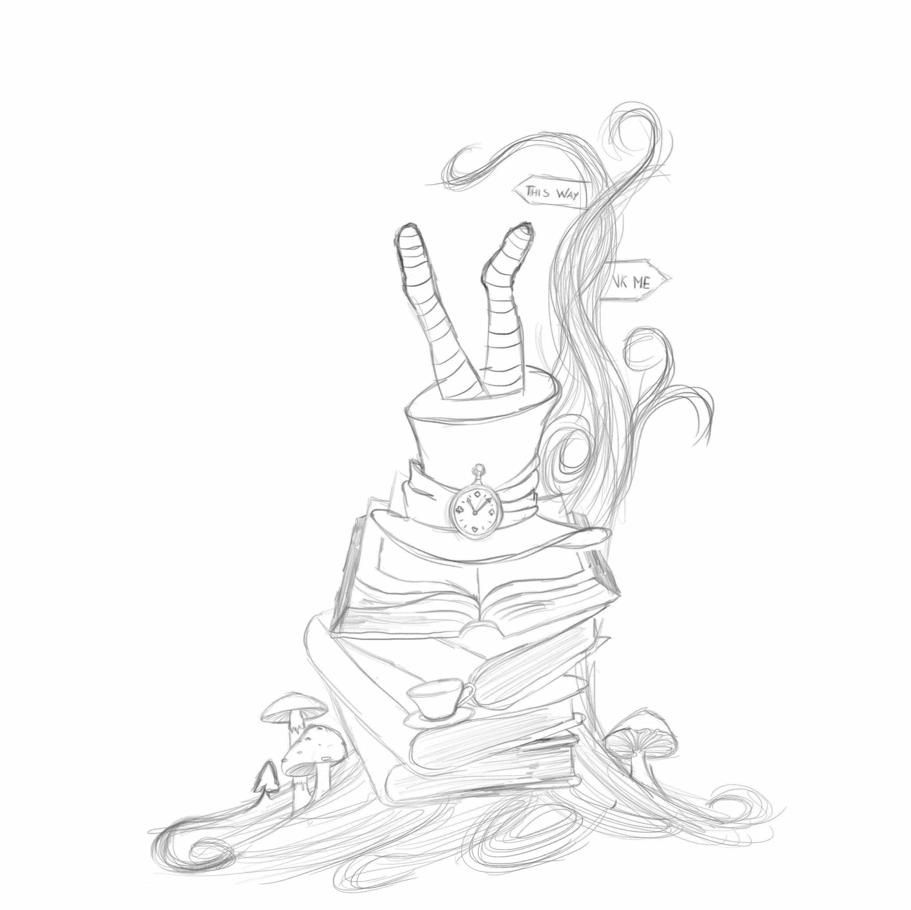

Handmade crafts
I collect materials (paper, beads, candles, colored pencils), start tiny crafts and make things by hand, usually because my brain decided I needed another hobby.
Hi, I'm Terrs, a human being with too many ideas and not enough time and space to make them real.
This page is not about UX, it's about another side of me: part creativity, part curiosity, part quiet chaos.
A place to show my collection of hobbies, my obsession with colors and my love for handmade crafts. ♥


Before design, I worked with my hands.
For years, pastry was my creative world: precise, intense, beautiful and exhausting in equal measure.
It taught me patience, discipline, attention to detail, and how much balance matters: between ingredients, textures, taste and presentation.
I don’t see that chapter as something separate from who I am now.
It’s part of the way I think, observe and create.
- Søren Kierkegaard
Handmade crafts
I collect materials (paper, beads, candles, colored pencils), start tiny crafts and make things by hand, usually because my brain decided I needed another hobby.

Drawing
Drawing has always been one of my passions, both on paper and digitally. I also love buying pencils, colors and art supplies I’ll probably never use, because collecting them is the funniest part!


Crochet
I love creating tiny crochet pieces, usually flowers, plants and keychains. The smaller they are, the happier I am.

Currently obsessing over
- T. S. Eliot
Why me?
I’m not made of one single thing.
I’m a mix of precision and imagination, quiet observation and creativity, handmade details and digital ideas.
Everything I create starts from the same place: curiosity, care, and the urge to create something unique.